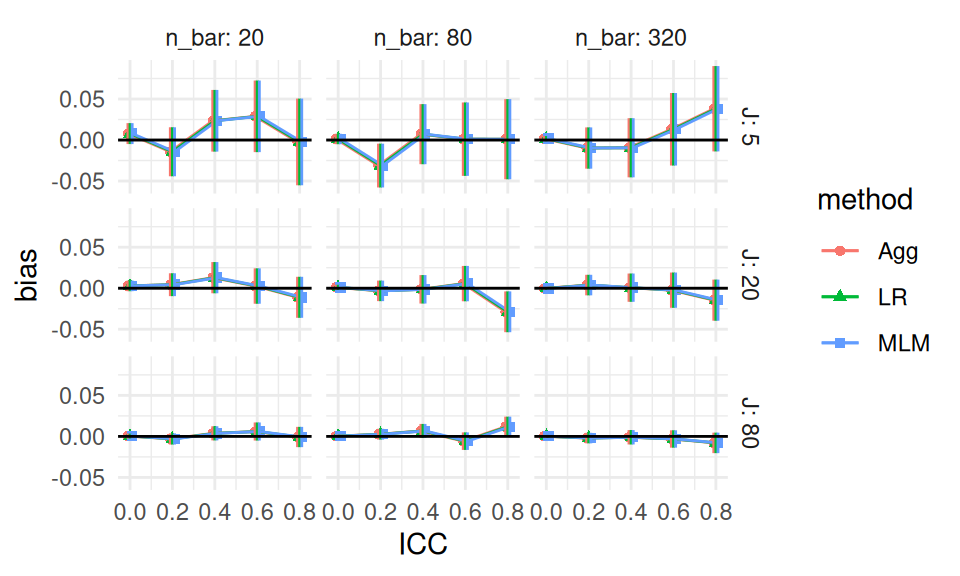
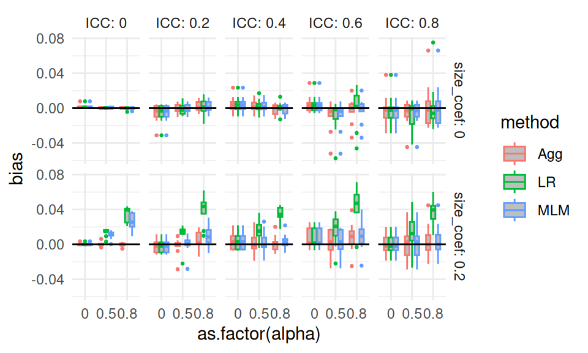
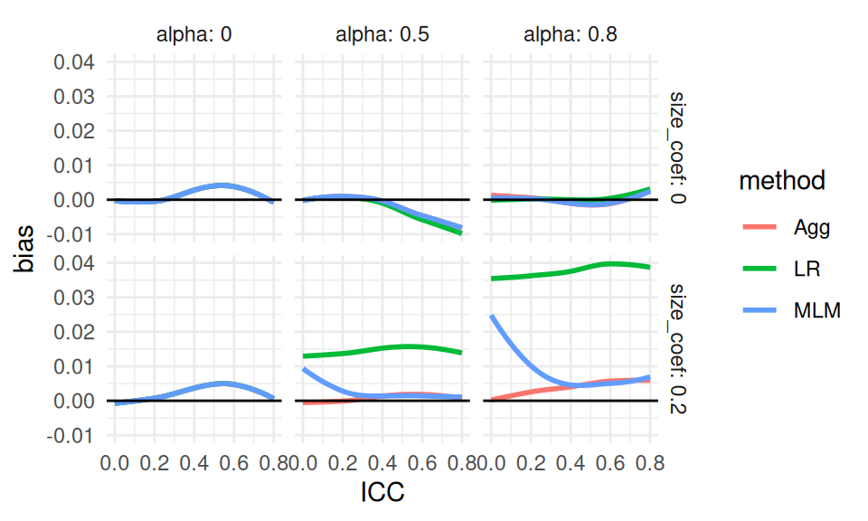

Visualization should nearly always be the first step in analyzing simulation results. In the prior chapter, we saw a variety of examples primarily taken from published work. Those visualizations were not the initial ones created for those research projects. In practice, getting to a good visualization often requires creating many different graphs to look at different aspects of the data. From that pile of graphs, you would then curate and refine those that communicate the overall results most cleanly.
In our work, we find we often generate a series of R Markdown reports with comprehensive sets of charts targeting our various research questions. These initial documents are then discussed internally by the research team.
In this chapter we first discuss four essential tools that we frequently use to make these initial sets of graphs:
Subsetting: Multifactor simulations can be complex and confusing. Sometimes it is easier to first explore a subset of the simulation results, such as a single factor level.
Many small multiples: Plot many results in a single plot, with facets to break up the results by simulation factors.
Bundling: Group the results by a primary factor of interest, and then plot the performance measure as a boxplot so you can see how much variation there is within that factor level.
Aggregation: Average the performance measure across some of the simulation factors, so you can see overall trends with respect to the remaining factors.
To illustrate these tools, we walk through them using our running example of comparing methods for analyzing a Cluster RCT. We will start with an investigation of bias.
As a reminder, in our Cluster RCT example, we have three methods for estimating the average treatment effect: linear regression of the student-level outcome onto treatment (with cluster-robust standard errors); aggregation, where we regress the cluster-level average outcome onto treatment (with heteroskedastic robust standard errors); and multilevel modeling with random effects. We want to know if these methods are biased for our defined estimand, which is the cluster-average treatment effect. We have five simulation factors: school size (n_bar), number of schools (J), the intraclass correlation (ICC), the degree of variation in school size (alpha), and the relationship between school size and treatment effect (size_coef).
Once we go through the four core tools, we continue our evaluation of our simulation to show how we can assess other performance metrics of interest (true standard error, RMSE, estimated standard errors, and coverage) using these tools. We do not dive deeply into validity or power; see Chapter 19 for more on those measures.
13.1 Subsetting and Many Small Multiples
“Small Multiples” is when you make a plot that is actually a bunch of related plots. These plots can themselves be organized in a plot-like structure, with an x-axis depending on one categorical variable, and the y-axis another (this is a “facet grid”).
Generally, with small multiples, it is relatively straightforward to look at three simulation factors. This is because, with a facet grid, you can easily plot five aspects of your data: two for the facet x- and y-axis arrangement, one for the within-facet x-axis, and one for the within-facet y-axis, and one for color/line type. Of the five aspects, we usually use one of these for method (if we are comparing methods) and one for the performance metric (the outcome), giving three remaining aspects to assign to our simulation factors. In cases with more than three factors, an easy initial approach is pick three favorite factors and then filter all the simulation results down to specific levels for the remaining factors.
For example, for our simulation, we might target the ICC of 0.20, taking it as a “reasonable” value that, given our substance matter knowledge, we know is frequently found in empirical data. We might further pick \(\bar{n} = 80\), as our middle level for cluster size. This leaves three factors (J, size_coef, and alpha), allowing us to plot all of our simulation results for our subset. We then decide to plot bias (our performance measure) as a function of J, with different lines for the different methods, and facets for the different levels of size_coef and alpha.
Each point is one of our methods in one of our simulation scenarios. We are looking at the raw results. We connect the points with lines to help us see trends within each of the small multiples. The lines help us visually track which group of points goes with which.
We immediately see that when there is a lot of site variation (alpha = 0.80), and it relates to outcome (size_coef=0.2), linear regression is very different from the other two methods. We also see that when alpha is 0 and size_coef is 0, we may also have a negative bias when \(J = 5\). Before we get too excited about this surprising result, we add MCSEs to our plot to see if this is a real effect or just noise:
Our confidence intervals exclude zero! Our excitement mounts. We next subset our overall results again to check all the scenarios with alpha = 0, and size_coef = 0 to see if this is a real effect. We can still plot all our data, as for that subset of scenarios we still only have three factors, ICC, J_bar, and n_bar, left to plot (we omit the code as it is similar to above).

It appears that our ICC=0.20 and n_bar=80 scenario was just a fluke. Almost all of our confidence intervals easily cover 0, and we are not seeing any major trends. Overall we conclude that indeed, when there is no variation, or when the variation does not relate to impact, nothing is particularly biased. Interestingly, we further see that all methods seem to give identical estimates when there is no site variation, regardless of ICC, J, or n_bar (identical estimates is the easiest explanation of all the estimated biases and associated MCSEs across the three methods being identical).
Subsetting is a very useful tool, especially when the scope of the simulation feels overwhelming. And as we just saw, it can also be used as a quick validity check: subset to a known context where we know nothing exciting should be happening to verify that indeed nothing is there.
Subsetting allows for a deep dive into specific context. It also can make it easier to think through what is happening in a complex context; think of it as a flashlight, shining attention on one part of your overall simulation or another, to focus attention and reduce complexity. Sometimes we might even just report the results for a subset in our final analysis and put the analysis of the the remaining scenarios elsewhere, such as an online supplemental appendix. In this case, it would then be our job to verify that our reported findings on the main results indeed were echoed in the set-aside runs.
Subsetting is useful, but if you do want to look at all your simulation results at once, you need to somehow aggregate or group your results to make them all fit on the plot. We next present bundling, a way of keeping the core idea of small multiples to show all of the raw results, but now in a semi-aggregated way.
13.2 Bundling
When faced with many simulation factors, we can bundle the simulations into groups defined by a selected primary factor of interest, and then plot each bundle with a boxplot of the distribution of a selected performance criteria. Each boxplot shows the central measure of how well an estimator worked across a set of scenarios, along with a sense of how much that performance varied across those scenarios in the box. If the boxes are narrow, then we know that the variation across simulations within the box did not impact performance much. If the boxes are wide, then we know that the factors that vary within the box matter a lot for performance.
With bundling, we generally need a good number of simulation runs per scenario, so that the MCSE in the performance measures does not make our boxplots look substantially more variable (wider) than the truth. Consider a case where all the scenarios within a box have zero true bias; if the MCSE were large, the estimated biases would still vary and we would see a wide boxplot when we should not.
To illustrate bundling, we replicate our small subset figure from above, but instead of each point (with a given J, alpha, and size_coef) just being the single scenario with n_bar=80 and ICC = 0.20, we plot all the scenarios (across the n_bar and ICC values) in a boxplot at that location. We put the boxes for the three methods side-by-side to directly compare them:
All of our simulation trials are represented in this plot. Each box is a collection of trials. E.g., for J = 5, size_coef = 0, and alpha = 0.8 each of the three boxes contains 15 scenarios representing the varying ICC and cluster size. Here are the 15 results in the J = 5 box in the top right facet for the Aggregation method:
Our bias boxplot makes some trends clear. For example, we see that there is no bias, on average, for any method when the size coefficient is 0 and alpha is 0, especially when \(J = 80\). When the size coefficient is 0.2, we also see LR jump out from the others when alpha is not 0.
The apparent outliers (long tails) for some of the boxplots suggest that the two remaining factors (ICC and cluster size) could relate to the degree of bias. They could also be due to MCSE, and given that we primariy see these tails when \(J\) is small, this is a real concern. MCSE aside, a long tail means that some scenario in the box had a high level of estimated bias. We could try bundling along different aspects to see if either of the remaining factors (e.g., ICC) explains these differences. Here we try bundling cluster size and number of clusters (we again omit the code).

We have some progress now: the long tails are primarily when the ICC is high, but we also see that MLM has bias when the ICC is 0, if alpha is nonzero.
Estimates of bias will be more unstable in smaller samples sizes, because the estimators themselves are more unstable (recall the MCSE of bias is \(SE/\sqrt{R}\), with \(R\) the number of trials and \(SE\) is the true standard error of the estimator). Because of this instability, the tails could still be MCSE, with some of our bias estimates being large due to random chance. Or perhaps there is still some specific combination of factors that allow for large bias (e.g., perhaps small sample sizes makes our estimators more vulnerable to bias). In an actual analysis, we would make a note to investigate these anomalies later on.
In general, trying to group your simulation scenarios so that their boxes are generally small is a good idea; small boxes means that you have found a representation of the data where you know what is driving the variation in your performance measure, and that the factors bundled inside the boxes are less important. This might not always be possible, if all your factors matter; in this case the width of your boxes tells you to what extent the bundled factors matter relative to the factors explicitly present in your plot.
One might wonder, with only few trials per box, whether we should instead look at the individual scenarios. Unfortunately, that gets a bit cluttered:
Using boxplots, even over such a few number of points, notably clarifies a visualization.
13.3 Aggregation
Boxplots can make seeing trends more difficult, as the eye is drawn to the boxes and tails, and the range of your plot axes can be large due to needing to accommodate the full tails and outliers of your results; this can compress the mean differences between groups, making them look small. They can also be artificially inflated, especially if the MCSEs are large. Instead of bundling, we can therefore aggregate, where we average all the scenarios within a box to get a single number of average performance, to see overall trends.
When we aggregate, i.e. average over some of the factors, we collapse our simulation results down to fewer moving parts. Aggregation across factors is better than not having varied those factors in the first place! A performance measure averaged over a factor is a more general answer of how things work in practice than having not varied the factor at all.
For example, if we average across ICC and site variation, and see that our methods had different degrees of bias as a function of \(J\), we would know that the found trend is a general trend across a range of scenarios defined by different ICC and site variation levels, rather than a specific one tied to a single ICC and amount of site variation. Our conclusions would then be more general: if we had not explored more scenarios, we would not have any sense of how general our found trend might be.
That said, if some of our scenarios had no bias, and some had large bias, when we aggregated we would report that there is generally a moderate amount of bias. This would not be entirely faithful to the actual results. But when the initial boxplots show results generally in one direction or another, then aggregation can be quite faithful to the spirit of the results.
A major advantage of aggregation over the bundling approach is we can have fewer replications per scenario. If the number of replicates within each scenario is small, then the performance measures for each scenario is estimated with a lot of error; the aggregate, by contrast, will be an average across many more replicates and thus give a good sense of average performance. The averaging, in effect, gives a lot more replications per aggregated performance measure.
For our cluster RCT, we might aggregate our bias across our sample sizes as follows:
We now have a single bias estimate for each combination of size_coef, J, and alpha; we have collapsed 15 scenarios into one overall scenario that generalizes bias across different average cluster sizes and different ICCs. We can then plot, using many small multiples:
We now see quite clearly that as alpha grows, linear regression gets more biased if cluster size relates to average impact in the cluster (size_coef = 0.2). Our finding makes sense given our theoretical understanding of the problem—if size is not related to treatment effect, it is hard to imagine how varying cluster sizes would cause much bias.
We are looking at an interaction between our simulation factors: we only see bias for linear regression when cluster size relates to impact and there is variation in cluster size. We also see that all the estimators have near zero bias when there is no variation in cluster size or the cluster size does not relate to outcome, as shown by the top row and left column of facets. Finally, we see the methods all likely give the same answers when there is no cluster size variation, given the overplotted lines on the left column of the figure.
So far we have learned that MLM does seem to react to ICC, and that LR reacts to alpha and size_coef in combination. We can continue to explore by changing our \(x\)-axis, e.g., to ICC. More broadly, with many levels of a factor, as we have with ICC, we can let ggplot aggregate directly by taking advantage of geom_smooth(). This leads to the following:

Our story is fairly clear now: LR is increasingly biased as alpha grows large and the cluster size relates to impact. MLM is also biased in these cases, but only when ICC is low (this is because it is driving towards person-weighting when there is little cluster variation).
Our figure does have what appears to be a negative bias trend for alpha = 0.5 and higher ICC—we expect this is Monte Carlo error, as we do not have a theoretical reason to expect bias here; simulations will often have unfortunate, and misleading, patterns that are driven by random chance. We could (and probably should) run further analyses or a second simulation to check our assumptions here.
Aggregation is powerful, but it can be misleading if you have scaling issues or extreme outliers. With bias, our scale is fairly well set, so we are good. But if we were aggregating standard errors over different sample sizes, then the larger standard errors of the smaller sample size simulations (and the greater variability in estimating those standard errors) would swamp the standard errors of the larger sample sizes. Usually, with aggregation, we want to average over something we believe does not change massively over the marginalized-out factors. To achieve this, we can often average over a relative measure (such as standard error divided by the standard error of some baseline method), which tend to be more invariant and comparable across scenarios. We will see more examples of this kind of aggregation later on.
13.3.0.1 Some notes on how to aggregate
Some performance measures are biased with respect to the Monte Carlo uncertainty. The estimated standard error, for example, is biased; the variance, by contrast, is not. The RMSE is biased, the MSE is not.
When aggregating, therefore, it is often best to aggregate the unbiased performance measures, and then calculate the biased ones from those. For example, to estimate aggregated standard error you might do the following:
MCSE can sometimes distort an aggregation of a performance measure. For example, if you are looking at the magnitude of bias (\(|bias|\)), then you can run into issues when the biases are close to zero, if they are measured noisily. In particular, imagine you have two scenarios with true bias of 0.0, but your MCSE is 0.02. In one scenario, you estimate a bias of 0.017, and in the other -0.023. If you average the estimated biases, you get -0.003, which suggests a small bias as we would wish. Averaging the absolute biases, on the other hand, gives you 0.02, which could be deceptive. With high MCSE and small magnitudes of bias, looking at average bias, not average \(|bias|\), is safer.
Alternatively, you can use the formula \(RMSE^2 = Bias^2 + SE^2\) to back out the average absolute bias from the RMSE and SE. In this approach, first aggregate to get overall RMSE and SE, and then calculate \(Bias^2\) as \(RMSE^2 - SE^2\).
13.4 Comparing true SEs with standardization
We just did a deep dive into bias. Uncertainty (standard errors) is another primary performance criterion of interest. As an initial exploration, we plot the standard error estimates from our Cluster RCT simulation, using smoothed lines to visualize trends. We use ggplot’s geom_smooth to aggregate over size_coef and alpha, which we leave out of the plot. We include individual data points to visualize variation around the smoothed estimates:
We observe several broad trends in the standard error behavior. First, standard error increases with the intraclass correlation (ICC). This is as expected: greater similarity within clusters reduces the effective sample size. Second, standard error decreases as the number of clusters (J) increases, which reflects the benefit of having more independent units of analysis. In contrast, increasing the cluster size (n_bar) has relatively little effect on the standard error (the rows of our facets look about the same). Lastly, all methods show fairly similar levels of standard error overall.
While we can extract all of these observations from the figure, the figure is not ideal for comparing our methods. The dominant influence of design features like ICC and sample size obscures our ability to detect meaningful differences between methods. In other words, even though SE changes across scenarios, it’s difficult to tell which method is actually performing better within each scenario.
We can also view the same information by bundling over the left-out dimensions. We add n_bar to our bundles, instead of faceting by it, because maybe it does not matter that much:
Our plots are still dominated by the strong effects of ICC and the number of clusters (J). When performance metrics like standard error vary systematically with design features, it becomes difficult to compare methods meaningfully across scenarios.
To address this, we shift our focus through standardization. We want to shift from observations such as:
“All my SEs are getting smaller,”
to conclusions such as:
“Estimator 1 has systematically higher SEs than Estimator 2 across scenarios.”
Simulation results are often driven by broad design effects, which can obscure the specific methodological questions we care about. We can therefore standardize, by calculating a relative performance measure, to bring our desired comparisons to the forefront. One straightforward strategy for standardization is to compare each method’s performance to a designated baseline. In this example, we use Linear Regression (LR) as our baseline.
We standardize by, for each simulation scenario, dividing each method’s SE by the SE of LR, to produce SE.scale. This relative measure, SE.scale, allows us to examine how much better or worse, across our scenarios, each method performs relative to a chosen reference method.
The figure above shows how each method compares to LR across simulation scenarios. Aggregation clearly performs worse than LR when the Intraclass Correlation Coefficient (ICC) is zero. However, when the ICC is greater than zero, Aggregation yields improved precision. The Multilevel Model (MLM), in contrast, appears more adaptive. It captures the benefits of aggregation when the ICC is high, but avoids the precision cost when ICC is zero. This adaptability makes MLM appealing in practice when the ICC is unknown or variable across contexts.
In looking at the plot we are seeing essentially identical rows and fairly similar columns. This suggests we should bundle the n_bar to get a cleaner view of the main patterns, and that we could also bundle over J as well. We finally can drop the LR results entirely, as it is the reference method and always has a relative SE of 1.
The pattern is clear: when ICC = 0, Aggregation performs worse than LR, and MLM performs about the same. But as ICC increases, Aggregation and MLM both improve, and perform about the same to each other. This highlights the robustness of MLM across diverse conditions.
As a warning regarding Monte Carlo uncertainty: when standardizing results, it is important to remember that uncertainty in the baseline measure (here, LR) propagates to the standardized values. This should be considered when interpreting variability in the scaled results. Uncertainty for relative performance is generally tricky to assess.
To clarify the main patterns, we then aggregate our SE.scale across the bundled simulation settings—relative performance is on the same scale, so averaging is now a natural thing to do. We have aggregated out sample sizes, and we go further and remove size_coef since it does not seem to matter much, given the above plot:
Our aggregated plot of the precision of aggregation and MLM relative to Linear Regression gives a simple story clearly told. The performance of aggregation improves with ICC. MLM also has benefits over LR, and does not pay much cost when ICC is low.
13.5 The Bias-SE-RMSE plot
We can visualize bias and standard error together, along with RMSE, to get a rich picture of performance. To illustrate, we subset to our scenarios where there is real bias for both LR and MLM (i.e., when ICC is 0; see findings under bias from above). We also subset to our middle values of n_bar = 80 and our large J=80, where uncertainty is small and thus the relative role of bias may be large.
The combination of bias, standard error, and RMSE provides a rich and informative view of estimator performance. The top row represents settings where effect size is independent of cluster size, while the bottom row reflects a correlation between size and effect. We see how bias, SE and RMSE grow as site variation increases (moving rightward in each panel). Notably, when effect size is related to cluster size (bottom row), both linear regression and MLM exhibit significant bias, leading to notable increase in RMSE over SE. In contrast, when effect size is unrelated to cluster size (top row), all methods show minimal bias, and the SEs are about the same; that said, we see aggregation paying a penalty as variation cluster size increases. Overall, we see RMSE is primarily driven by SE.
The Bias-SE-RMSE visualization directly illustrates the canonical relationship:
\[ \text{RMSE}^2 = \text{Bias}^2 + \text{SE}^2 \]
The plot shows overall performance (RMSE) decomposed into into its two fundamental components: systematic error (bias) and variability (standard error). Here we see how bias for LR, for example, is dominant when site variation is high. The differences in SE across methods are small and are thus not the main reason for differences in overall estimator performance; bias is the main driver.
This is the kind of diagnostic plot we often wish were included in more applied simulation studies.
13.6 Assessing the quality of the estimated SEs
So far we have examined the performance of our point estimators. We next look at ways to assess our estimated standard errors. A good first question is whether they are calibrated (about the right size on average) across all the scenarios.
When assessing estimated standard errors it is very important to see if they are reliably the right size across the scenarios, making bundling an especially important tool here. We first see if the average estimated SE, relative to the true SE, is usually around 1 across all scenarios:
We see that, for the most part, our estimated SEs are about right, on average, across all scenarios. When the ICC is 0 and J is small, the MLM SEs are clearly too high. We also see that when J is 5, the LR estimator tends to be a bit low.
We next start exploring to dig into why our boxplots are wide. In particular, we want to see if other factors dictate when the SEs are biased. We first subset to the \(J = 80\) scenarios to see if those box widths could just be due to the MCSEs. The simhelperscalc_relative_var() method gives mcses for relative bias of an estimated variance to the true variance. We thus square our estimated SEs to get variance estimates, and then use that function to see if the relative variance estimates are biased:
In looking at this plot, we see no real evidence of miscalibration: our confidence intervals are generally covering 1, meaning our average estimated variance is about the same as the true variance. This makes us think the boxes for \(J=80\) in the prior plot are wide due to MCSE rather than other simulation factors driving some slight miscalibration. We might then assume this applies to the \(J = 20\) case as well.
13.6.1 Stability of estimated SEs
We can also look at how stable the estimated SEs are, relative to the actual uncertainty they are trying to capture. We do this by calculating the standard deviation of the estimated standard errors and compare that to the standard deviation of the point estimate. This is related to the coefficient of variation of SE_hat.
Overall, we have a lot of variation in the estimated SEs, relative to the actual uncertainty. We also see that MLM has more reliably estimated SEs than other methods when ICC is small. Aggregation has relatively more trouble estimating uncertainty when J is small. Finally, LR’s SEs are slightly more unstable, relative to the other methods, when \(J\) is larger.
Assessing the stability of standard errors is usually very in the weeds of a performance evaluation. It is a tricky measure: if the true SE is high for a method, then the relative instability will be lower, even if the absolute instability is the same. Thinking through what might be driving what can be difficult, and is often not central to the main purpose of an evaluation. People often look at confidence interval coverage and confidence interval width, instead, to assess the quality of estimated SEs.
We can instead try using the degree of freedom calculations we saw in Section 9.2.2. We plug in \(\widehat{df} = \frac{2 \bar{V}^2}{S_V^2}\) for each scenario and plot:
The multilevel model generally has higher estimated degrees of freedom, especially when ICC is low, and Linear Regression has generally lower degrees of freedom overall (except when ICC is zero).
13.7 Assessing confidence intervals
Coverage is a blend of how accurate (unbiased) our estimates are and how good our estimated SEs are. To assess coverage, we first calculate confidence intervals using the estimated effect, estimated standard error, and degrees of freedom. Once we have our calculated \(t\)-based intervals, we can average them across runs to get average width and coverage using simhelpers’s calc_coverage() method. A good confidence interval estimator would be one which is generally relatively short while maintaining proper coverage.
We then look at those simulations with a relationship of site size and impact. We subset to n_bar = 80, size_coef = 0.2 and alpha = 0.5 to simplify for our initial plot:
Generally coverage is good unless \(J\) is low or ICC is 0. Monte Carlo standard error based confidence intervals on our performance metrics indicate that, in some settings, the observed coverage is reliably different from the nominal 95%, suggesting issues with estimator bias, standard error estimation, or both. We might then want to see if these results are general across the other simulation scenarios (see exercises).
For confidence interval width, we can calculate the average width relative to the width of LR across all scenarios:
Confidence interval width serves as a proxy for precision. Narrow intervals suggest more precise estimates. We see MLM has wider intervals, relative to LR, when ICC is low. When there is site variation, both Agg and MLM have shorter intervals. This plot essentially echos our standard error findings, as expected. There are mild differences due to differences in how the degrees of freedom are calculated, however.
13.8 Conclusions
Visualization is rarely a single plot; it is the process of iterating from messy, exploratory graphs to a small set of figures that communicate the main findings. In this chapter we walked through four core tools for that process—subsetting, many small multiples, bundling, and aggregation—and showed how they can be used together to manage the complexity of multifactor simulations. Subsetting helps with orientation and sanity checks, small multiples reveal interactions, bundling summarizes variability across scenarios, and aggregation highlights broad trends when the raw results are too noisy or too high dimensional to interpret directly.
We illustrated these tools using the Cluster RCT case study, beginning with bias and then extending the same workflow to standard errors, RMSE, estimated standard errors, and confidence interval performance. A recurring theme was that raw performance measures are often dominated by design effects such as ICC and sample size, which can obscure the method comparisons we care about. Standardization—especially expressing performance relative to a baseline method—can make comparisons far clearer, though it also propagates uncertainty from the baseline and should be interpreted with care.
Ultimately, the goal of visualization is to discover and communicate structure: where is performance stable and when does it change? The plots in this chapter provide a template for an overall workflow, and we encourage you to use the code and approach in your own work. There are further tools, and further concerns, that build on this core set of techniques; that is what we discuss in the following chapter.
Exercises
In these exercises we continue to work with the simulation results from the Cluster RCT example in this chapter. We provide the saved simulation results in the file simulation_CRT.rds, and load and process them as follows:
Exercise 13.1 (Checking bias) Under the discussion of aggregation, we closed with a plot suggesting negative bias as ICC increases when size_coef=0. Investigate that finding, either by digging into the results more or by running additional simulations. Do not re-run the entire simulation; sometimes a targeted investigation can be just as effective for answering a specific question.
Exercise 13.2 (Assessing uncertainty) Select a plot from this chapter that does not have monte carlo standard errors. Add monte carlo standard errors to that selected plot.
Exercise 13.3 (Assessing power) Make a plot showing how power changes as \(J\) changes. As an extra step, add MCSEs to the plot to assess whether you have a reasonable numbers of replications in the simulation.
Exercise 13.4 (Going deeper with coverage) For our cluster RCT, we saw coverage is low in some circumstances. Explore the full set of simulation results, possibly adding your own analyses, to ascertain why coverage is low. Is it due to estimator bias? Unreliably estimated standard errors? Something else? Make a final plot and draft a short write-up that captures how coverage is vulnerable for the three estimators.
Exercise 13.5 (Making another plot for assessing SEs) In the main chapter we examined how SE changes as a function of various simulation factors. Now generate a plot to see whether and when cluster size meaningfully helps precision, and explain what you find.
Exercise 13.6 (Pearson correlations with a bivariate Poisson distribution) In Section 10.3, we generated results for a multifactor simulation of confidence intervals for Pearson’s correlation coefficient under a bivariate Poisson data-generating process. Create a plot that depicts the coverage rate of the confidence intervals for \(\rho\) across all four simulation factors. Write a brief explanation of how the plot is laid out and explain why you chose to construct it as you did.